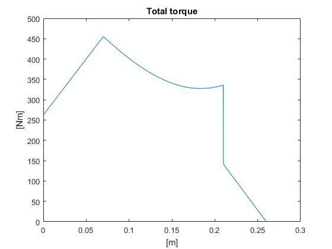
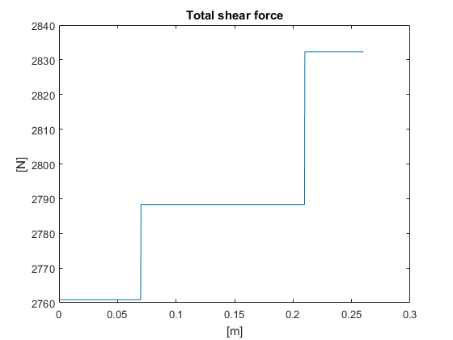
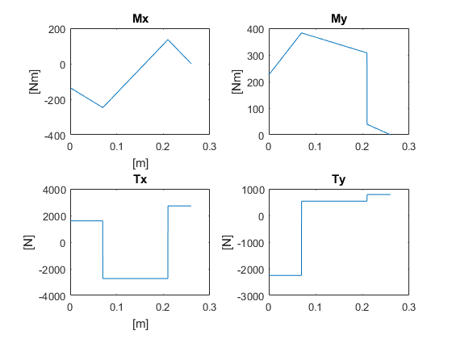

Contents
clear all
close all
clc
Variabels
Fvx=1600; Fvy=2250; Fvz=500; Raz=0;
rk=0.08; a=0.05; b=0.14; c=0.07; d1=0.1; L=a+b+c+d1;
D=45; B=25; an=20;
Lx=0.05; Ly=0;
n=70/60; P=3200;
Mv=P/(2*pi*n);
R1=rk/sind(D);
Fp=Mv/(rk); Fa=Fp*tand(B); Fr=Fp*tand(an)/cosd(B);
Equation-system
A1= [1 0 1 0 0;
0 1 0 1 0;
0 0 0 0 1;
0 0 -1*(a+b) 0 0;
0 0 0 1*(a+b) 0];
q1=[-Fvx-Fp;
Fvy-Fa/sqrt(2)+Fr/sqrt(2);
-Fvz-Fa/sqrt(2)-Fr/sqrt(2);
Fvx*(a+b+c+d1)+Fp*a-Fvz*Lx;
Fvy*(a+b+c+d1)-Fvz*Ly+Fr*cosd(D)*a-Fr*sind(D)*rk-Fa*cosd(D)*rk-Fa*sind(D)*a];
R1=A1\q1;
Rax1=R1(1,1); Ray1=R1(2,1);
Rbx1=R1(3,1); Rby1=R1(4,1); Rbz1=R1(5,1);
Calculations
z=linspace(0,(a+b+c),1000);
for i=1:length(z)
if z(i)>=0 && z(i)<(c)
Tx(i) = Fvx;
Ty(i) = -Fvy;
Mx(i) = Fvz*Lx-Fvx*(z(i)+d1);
My(i) = Fvy*(z(i)+d1);
Mtot(i)=sqrt(Mx(i).^2+My(i).^2);
Ttot(i)=sqrt(Tx(i).^2+Ty(i).^2);
elseif z(i)>=(c) && z(i)<(c+b)
Tx(i) = Fvx+Rbx1;
Ty(i) = Rby1-Fvy;
Mx(i) = Fvz*Lx-Fvx*(z(i)+d1)-Rbx1*(z(i)-c);
My(i) = Fvy*(z(i)+d1)-Rby1*(z(i)-c);
Mtot(i)=sqrt(Mx(i).^2+My(i).^2);
Ttot(i)=sqrt(Tx(i).^2+Ty(i).^2);
elseif z(i)>=(c+b) && z(i)<=(a+b+c)
Tx(i) = Fvx + Rbx1 + Fp;
Ty(i) = Rby1-Fvy-Fr*cosd(D)+Fa*sind(D);
Mx(i) = Fvz*Lx-Fvx*(z(i)+d1)-Rbx1*(z(i)-c)-Fp*(z(i)-(c+b));
My(i) = Fvy*(z(i)+d1)-Rby1*(z(i)-c)+Fr*cosd(D)*(z(i)-(c+b))-Fr*sind(D)*rk-Fa*cosd(D)*rk-Fa*sind(D)*(z(i)-(c+b));
Mtot(i)=sqrt(Mx(i).^2+My(i).^2);
Ttot(i)=sqrt(Tx(i).^2+Ty(i).^2);
end
end
Plot
plot(z,Mtot);
title('Total torque');
ylabel('[Nm]'); xlabel('[m]');
figure;
plot(z,Ttot);
title('Total shear force');
ylabel('[N]'); xlabel('[m]');
figure;
Mxp=subplot(2,2,1);
plot(Mxp,z,Mx);
title(Mxp,'Mx');
ylabel(Mxp,'[Nm]'); xlabel('[m]');
Myp=subplot(2,2,2);
plot(Myp,z,My);
title(Myp,'My');
ylabel(Myp,'[Nm]');
Txp=subplot(2,2,3);
plot(Txp,z,Tx);
title(Txp,'Tx');
ylabel(Txp,'[N]'); xlabel('[m]');
Typ=subplot(2,2,4);
plot(Typ,z,Ty);
title(Typ,'Ty');
ylabel(Typ,'[N]');
  
Dimension Stress
sigma_B=640e6;
sigma_y=390e6;
E=206e9;
rho=7780;
kt=2;
dy_s=0.033;
diai_s=0.032;
for i=1:length(z)
Mb=Mtot(i);
m=rho*L*pi*((dy_s/2).^2-(diai_s/2).^2);
Wv=pi*(dy_s.^4-diai_s.^4)/(16*dy_s);
Wb=pi*(dy_s.^4-diai_s.^4)/(32*dy_s);
tao=Mv/Wv*kt;
sigma_n=Mb/Wb*kt;
sigma_Vm=sqrt(sigma_n.^2+3*tao.^2);
while sigma_y < sigma_Vm
dy_s=dy_s+0.0001;
m=rho*L*pi*((dy_s/2).^2-(diai_s/2).^2);
Wv=pi*(dy_s.^4-diai_s.^4)/(16*dy_s);
Wb=pi*(dy_s.^4-diai_s.^4)/(32*dy_s);
tao=Mv/Wv*kt;
sigma_n=Mb/Wb*kt;
sigma_Vm=sqrt(sigma_n.^2+3*tao.^2);
end
diay_s(i)=dy_s;
end
Dimension Fatigue
sigma_ub=270e6;
sigma_e=270e6; tao_e=sigma_e/sqrt(3);
ks=0.92; q=0.73; kf=1+q*(kt-1);
dy_f=0.033; diai_f=0.032;
Wv=pi*(dy_f.^4-diai_f.^4)/(16*dy_f); Wb=pi*(dy_f.^4-diai_f.^4)/(32*dy_f);
sigma_a=Mtot(1)/Wb*kf/(kd(dy_f)*ks); tao_a=((Mv/Wv)*kf/(kd(dy_f)*ks))/2;
for i=1:length(z)
Wv=pi*(dy_f.^4-diai_f.^4)/(16*dy_f); Wb=pi*(dy_f.^4-diai_f.^4)/(32*dy_f);
sigma_a=Mtot(i)/Wb*kf/(kd(dy_f)*ks); tao_a=((Mv/Wv)*kf/(kd(dy_f)*ks))/2;
while sqrt((sigma_a/sigma_e).^2+(tao_a/tao_e).^2) > 1
dy_f=dy_f+0.0001;
Wv=pi*(dy_f.^4-diai_f.^4)/(16*dy_f); Wb=pi*(dy_f.^4-diai_f.^4)/(32*dy_f);
sigma_a=Mtot(i)/Wb*kf/(kd(dy_f)*ks); tao_a=((Mv/Wv)*kf/(kd(dy_f)*ks))/2;
end
diay_f(i)=dy_f;
end
Dimension Bendning
d_max=50e-6;
diay_b=0.033; diai_b=0.032;
I=pi*(diay_b.^4-diai_b.^4)/64;
M1x=Fvx*(c+d1)-Fvz*Lx; M2x=0; M_ubx=0; Px=-Fp;
M1y=-Fvy*(c+d1); M2y=0; M_uby=-rk*(Fr*sind(D)+Fa*cosd(D)); Py=Fr*cosd(D)-Fa*sind(D);
alpha=(b+c+d1)/L; beta=a/L;
delta=1;
while delta > d_max
diay_b=diay_b+0.0001;
I=pi*(diay_b.^4-diai_b.^4)/64;
m1x=M1x*L/(3*E*I)+M2x*L/(6*E*I)+M_ubx*L/(6*E*I)*(1-3*beta.^2)+Px*L.^2/(6*E*I)*alpha*beta*(1+beta);
m1y=M1y*L/(3*E*I)+M2y*L/(6*E*I)+M_uby*L/(6*E*I)*(1-3*beta.^2)+Py*L.^2/(6*E*I)*alpha*beta*(1+beta);
delta_x=(d1+c)*sin(m1x); delta_y=(d1+c)*sin(m1y);
delta=norm([delta_x delta_y]);
end
dia=[max(diay_s) max(diay_f) diay_b; diai_s diai_f diai_b];
Case 2
d2=0.06;
Ffa2=6000;
A2= [1 0 1 0 0;
0 1 0 1 0;
0 0 0 0 1;
0 0 1*(a+b) 0 0;
0 0 0 1*(a+b) 0];
q2=[-Fp;
-Fa*sind(D)+Fr*cosd(D);
-Ffa2-Fa*cosd(D)-Fr*sind(D);
-Fp*a;
-Fa*cosd(D)*rk-Fa*sind(D)*a+Fr*cosd(D)*a-Fr*sind(D)*rk];
R2=A2\q2;
Rax2=R2(1,1); Ray2=R2(2,1);
Rbx2=R2(3,1); Rby2=R2(4,1); Rbz2=R2(5,1);
Case 3
d3=0.05;
Ffp=1400; Ffr=1400; Ffa=700; rt3=0.02; fi=45;
A3= [1 0 1 0 0;
0 1 0 1 0;
0 0 0 0 1;
0 0 1*(a+b) 0 0;
0 0 0 1*(a+b) 0];
q3=[-Fp;
-Fa*sind(D)+Fr*cosd(D)+(Ffr*sind(fi)+Ffp*cosd(fi));
-Fr*sind(D)-Fa*cosd(D)+Ffa;
-Fp*a-Ffa*rt3*cosd(fi);
(Ffr*sind(fi)+Ffp*cosd(fi))*(a+b+c+d3)+Ffa*rt3*cosd(fi)+Fr*cosd(D)*a-Fr*sind(D)*rk-Fa*cosd(D)*rk-Fa*sind(D)*a];
R3=A3\q3;
Rax3=R3(1,1); Ray3=R3(2,1);
Rbx3=R3(3,1); Rby3=R3(4,1); Rbz3=R3(5,1);
Bearing calculations
k=3/2;
ny=2.8;
ata=0.5;
a1=1;
Bearing A Variabels: SKF NU1014ECP s.616
CA=76.5e3; C0A=93e3; PuA=12e3; nA=7000/60; dA=0.070; DA=0.110;
pA=10/3;
FrA1=norm([Rax1 Ray1]); FrA2=norm([Rax2 Ray2]); FrA3=norm([Rax3 Ray3]);
PA1=FrA1; PA2=FrA2; PA3=FrA3;
dmA=(dA+DA)/2;
ny1A=6.5;
kappaA=ny/ny1A;
aSKFA1=aSKF_rollerbearings(kappaA,ata*PuA/PA1);
aSKFA2=aSKF_rollerbearings(kappaA,ata*PuA/PA2);
aSKFA3=aSKF_rollerbearings(kappaA,ata*PuA/PA3);
L10A1=a1*aSKFA1*(CA/PA1).^pA; L10A2=a1*aSKFA2*(CA/PA2).^pA; L10A3=a1*aSKFA3*(CA/PA3).^pA; L10A=[L10A1 L10A2 L10A3];
L10Am=1/(0.4/L10A1+0.2/L10A2+0.4/L10A3);
L5Am=(log(0.95)/log(0.9)).^(1/k)*L10Am;
Bearing B Variabels: SKF 22318E s.906
CB=610e3; C0B=695e3; PuB=67e3; nB=2600/60; dB=0.090; DB=0.190; eB=0.33;
y1=2; y2=3; y0=2;
pB=10/3;
FrB1=norm([Rbx1 Rby1]); FrB2=norm([Rbx2 Rby2]); FrB3=norm([Rbx3 Rby3]); Fr=[FrA1 FrA2 FrA3; FrB1 FrB2 FrB3];
FaB=abs([Rbz1 Rbz2 Rbz3]);
for i=1:3
et(i)=FaB(i)/Fr(2,i);
if et <= eB
PB(i)=Fr(2,i)+y1*FaB(i);
elseif et > eB
PB(i)=0.67*Fr(2,i)+y2*FaB(i);
end
end
dmB=(dB+DB)/2;
ny1B=7;
kappaB=ny/ny1B;
aSKFB1=aSKF_rollerbearings(kappaB,ata*PuB/PB(1));
aSKFB2=aSKF_rollerbearings(kappaB,ata*PuB/PB(2));
aSKFB3=aSKF_rollerbearings(kappaB,ata*PuB/PB(3));
L10B1=a1*aSKFB1*(CB/PB(1)).^pB; L10B2=a1*aSKFB2*(CB/PB(2)).^pB; L10B3=a1*aSKFB3*(CB/PB(3)).^pA; L10B=[L10B1 L10B2 L10B3];
L10Bm=1/(0.4/L10B1+0.2/L10B2+0.4/L10B3);
L5Bm=(log(0.95)/log(0.9)).^(1/k)*L10Bm;
Bearing A&B
L10tot=(L10Am.^(-k)+L10Bm.^(-k)).^(-1/k);
L5tot=(log(0.95)/log(0.90)).^(1/k)*L10tot;